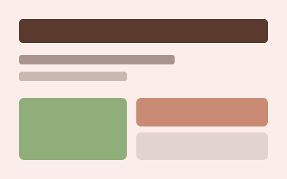
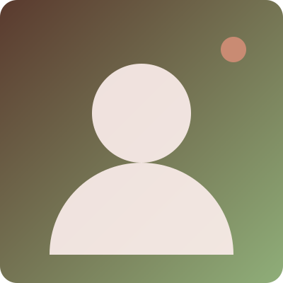
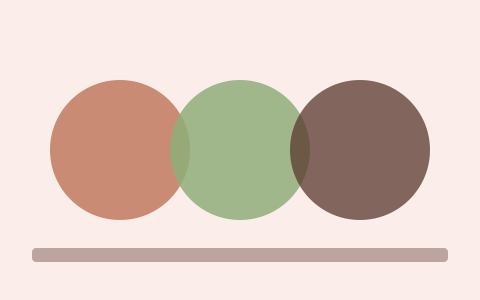

WiperIQ Predictive Model
Engineered a machine learning predictive model and interactive Streamlit dashboard for the KFUPM SparkOn challenge to analyze complex drilling datasets and extract operational insights.
Hello
Data Science & Engineering student focused on analytics strategy, business solutions, and visual design.

I am an undergraduate junior majoring in Data Science and Engineering at King Fahd University of Petroleum and Minerals (KFUPM). My technical focus centers on business analytics, data strategy, and translating raw metrics into actionable intelligence. Beyond data, I am also a passionate artist, frequently applying artistic principles and visual design to digital branding and physical marketing materials. I am proficient in Python and R for machine learning, seamlessly blending analytical rigor with creative problem-solving.

Engineered a machine learning predictive model and interactive Streamlit dashboard for the KFUPM SparkOn challenge to analyze complex drilling datasets and extract operational insights.

Conducted a comprehensive analysis of viewer categorization and streaming quality metrics using Python, translating raw platform data into strategic business intelligence.
Completed rigorous advanced training modules through King Abdullah University of Science and Technology (KAUST), focusing on analytical methodologies and hands-on technical problem-solving.